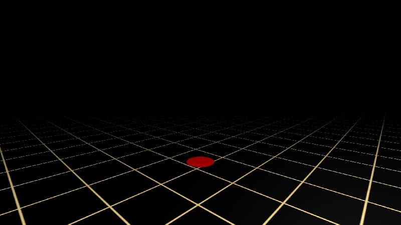

Primrose is a framework for creating Virtual Reality experiences on the web. Prior to Primrose, there were no frameworks that provided a full, default experience in only a few lines of code. Primrose makes getting up and running in VR very easy.
Using Primrose to make web applications is straightforward. The basic concept is to create an "Environment" that wraps around a standard Three.js scene. This environment handles the basic interactions of a scene, such as a common UI for entering VR mode, and progressively enhancing between desktop, mobile, Google Cardboard, Samsung Gear VR, Oculus Rift, and HTC Vive.
The "empty" project looks like this, giving you a ground to walk on, stereo view with a VR head-mounted display, and the ability to walk around with mouse/keyboard, gamepad, and point-and-click teleportation. For more information on how to build Primrose applications, start with the documentation for the Primrose.BrowserEnvironment class. Pay particular attention to the list of events and methods, as well as the options available in the Primrose.BrowserEnvironment options hash
grammar("JavaScript");
var env = new Primrose.BrowserEnvironment({
backgroundColor: 0x000000,
groundTexture: "images/deck.png",
useFog: true
});
env.addEventListener("ready", function(){
// Perform any post-initialization setup. Once this event fires, the
// Primrose framework is ready and will start animation as soon as this
// function returns.
});
env.addEventListener("update", function(){
// Perform per-frame updates here, like moving objects around according
// to your own rules.
});
If you have the asset file for the floor texture and everything worked correctly, it should look something like this:
